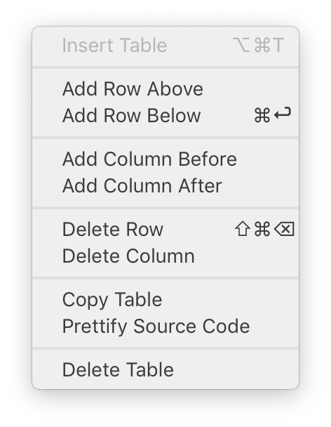

Редактирование таблиц в Typora
Перевод страницы документации Typora Table Editingopen in new window.
Таблицы в Markdown
Typora поддерживает синтаксис таблиц GitHub Flavored Markdownopen in new window. Следующий текст в markdown-файле будет преобразован в таблицу.
| Первый заголовок | Второй заголовок |
|---|---|
| Содержимое ячейки 1 | Содержимое ячейки 2 |
| Содержимое первой колонки | Содержимое второй колонки |
Редактирование таблиц в Typora
Для создания и изменения таблиц используйте markdown разметку, либо расширенные возможности GUI: контекстное меню, горячие клавиши, drag & move и всплывающие подсказки.

Создание таблиц в Typora
Для создания таблицы в Typora просто напишите заголовок таблицы в markdown.
|First Header | Second Header|
И затем нажмите Enter.
Также таблица вставляется через главное меню Paragraph->Table, или сочетанием клавиш Ctrl+T.
Минимальная таблица состоит из заголовка, одной строки и одного столбца.
Добавление строки в таблицу
Нажмите Command/Ctrl+Enter для вставки пустой строки под текущей строкой таблицы, либо используйте контекстное меню.
Удаление строки из таблицы
Команда удаления доступна в контекстном меню.
Добавление и удаление колонки в таблице
Сделайте клик правой кнопкой мыши на ячейке таблицы, и в подменю table контекстного меню, есть пункты для добавления и удаления колонок таблицы.
Изменение размера таблицы
Поставьте курсор внутри таблицы и над заголовком таблицы появиться всплывающая подсказка. Нажмите на самую левую иконку, и вам будет доступно изменение размера таблицы как в самых продвинутых редакторах.
Если вы хотите добавить в таблицу более чем 6 столбцов или 10 строк, нажмите на поле ввода внизу и ввести нужно число.
Выравнивание текста в колонке
В GitHub Flavored Markdownopen in new window, выравнивание в колонке настраивается по такому примеру:
| Default | Left | Right | Center |
|---|---|---|---|
| cell1 | cell2 | cell3 | cell4 |
В Typora, вы можете просто изменить выравнивание текста в колонке выбором подходящей иконки из всплывающей подсказки на таблице.
При установке выравнивания, Typora добавит атрибут style="text-align: left" в выбранную колонку (<td>), но окончательное выравнивание определяется после применения правил CSS текущей темы и пользовательских CSS.
Перемещение строк и столбцов
Переместите мышь на левую (верхнюю) границу строки (колонки) и используйте drag & drop.